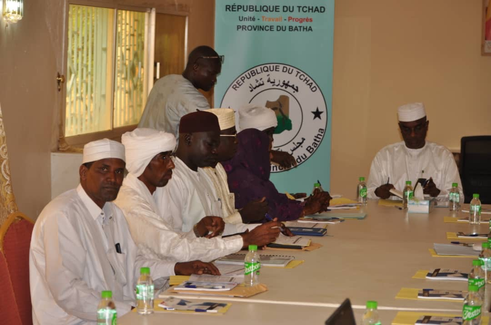
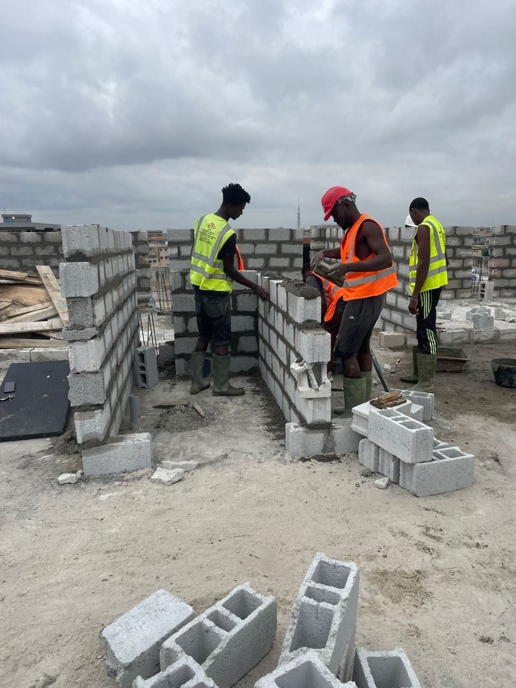
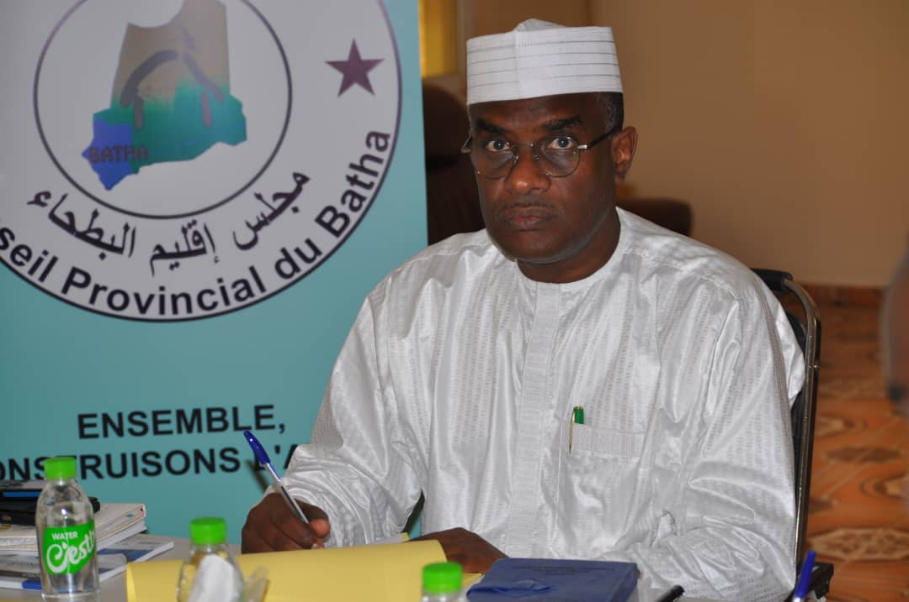
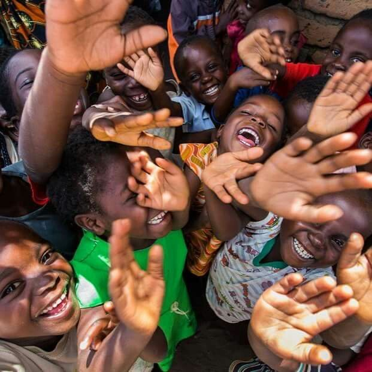

Notre Mission

Développement communautaire
Nous travaillons en étroite collaboration avec les habitants du Batha pour identifier leurs besoins et mettre en place des projets de développement adaptés. Notre approche participative garantit que nos actions répondent aux attentes de la population.
Amélioration des infrastructures de santé
Le Conseil provincial du Batha s'efforce d'améliorer l'accès aux soins de santé pour tous. Nous construisons et rénovons des hôpitaux et des centres de santé afin d’offrir des services médicaux de qualité à la population.

Construction d’écoles
Nous nous engageons à construire des écoles de qualité pour assurer l’éducation des enfants du Batha. L’accès à l’éducation est essentiel pour le développement de notre communauté et pour offrir un avenir prometteur à nos jeunes.

Gouvernance et participation citoyenne
Le Conseil provincial du Batha œuvre pour renforcer la gouvernance locale, encourager la participation citoyenne et promouvoir la transparence dans la gestion des affaires publiques.
Témoignage
« Le Conseil provincial du Batha est la voix du peuple et agit concrètement pour améliorer nos vies. Je suis fier de faire partie de cette communauté. »
Développement économique local
Le Conseil provincial du Batha soutient les initiatives économiques locales afin de renforcer les activités génératrices de revenus, encourager l’entrepreneuriat et améliorer les conditions de vie des populations rurales et urbaines.

Paix et cohésion sociale
Le Conseil provincial du Batha œuvre activement pour la promotion de la paix, du vivre-ensemble et du dialogue communautaire, afin de renforcer la cohésion sociale et prévenir les conflits au sein de la province.
Protection de l’environnement
Conscient des enjeux climatiques, le Conseil provincial du Batha encourage la protection de l’environnement, la gestion durable des ressources naturelles et la sensibilisation des populations aux bonnes pratiques environnementales.